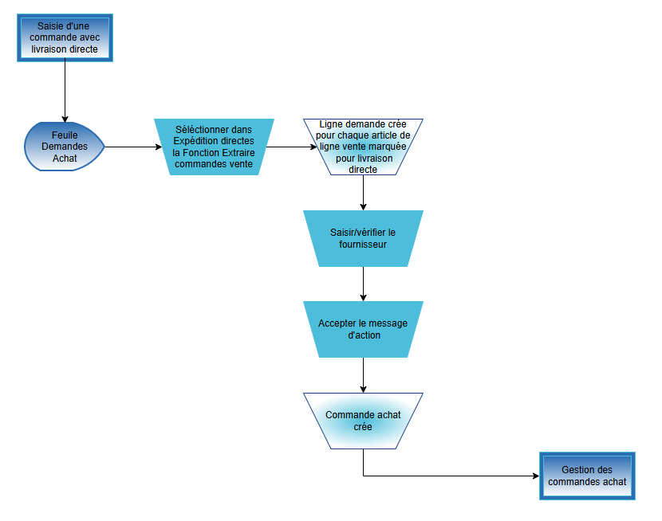
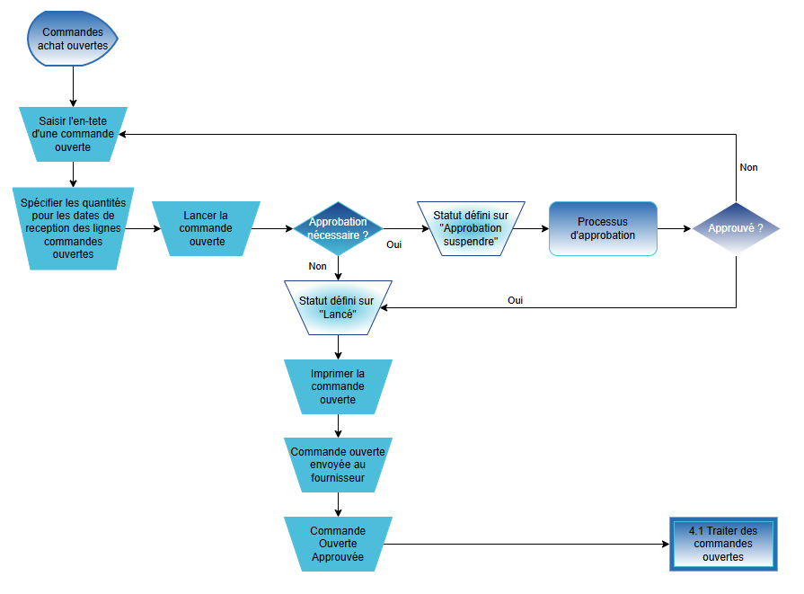

FAD
 -
-
DOCUMENT D’ANALYSE FONCTIONNEL
-
FUNCTIONAL ANALYSIS DOCUMENT
Processus Achat
Microsoft Business Central
- ANAL

Sommaire
4. Traitement d‘une livraison directe 6
5. Saisie d’une demande de prix 7
6. Saisie d’une commande cadre 8
7. Saisie d’une commande d‘achat 10
8. Saisie d’un retour d’une commande achat 12
11. Annexe 1 : Liste d‘écarts 16
Ce document liste l’analyse fonctionnel sur les processus métier du client concernant le domaine des achats. Les principaux objectifs de l’analyse fonctionnel sont :
- Visiter les sites clients comme les usines, entrepôts et/ou bureaux
- Conduire des ateliers orientés processus.
- Ne pas rentrer en profondeur sur les fonctionnalités de l’ERP ni faire de démonstrations
- Comprendre la façon de travailler actuelle, les points faibles et les attentes globales et futures
- Identifier les écarts critiques et les interfaces qui peuvent avoir un impact sur le projet
- Identifier les volumes des référentiels et données transactionnelles
- Confirmer le périmètre fonctionnel, technique, géographique et organisationnel du projet
- Identifier un jeu de donnée nécessaire pour l’ERP pour mieux préparer les ateliers de démonstration.
Ce document a été préparé sur la base d‘atelier(s) réalisés avec les membres de l'équipe de projet suivants :
Atelier | Date | Lieu | Almakom | Client |
1er atelier | … | … | Nom et Prénom | Nom et Prénom |
2ème atelier | … | … | Nom et Prénom | Nom et Prénom |
Versions du document
Version | Date | Description | Ecrit par | Approuvé par |
Draft | JJ/MM/AAAA | Draft | Nom et Prénom | Nom et prénom |
… | JJ/MM/AAAA | … | … | … |
Membre de l‘équipe | Fonction | |
Nom et Prénom | … | … |
Nom et Prénom | … | … |
Les processus standards ERP qui font partie des ateliers d’analyse sur les achats sont :

3 Planification
3.1. Contexte et Hypothèses
[INFORMATION MANQUANTE]
Les hypothèses qui peuvent avoir un impact sur le projet doivent être indiquées.
3.2. Schéma des processus ERP : Planification 1.0

3.3. Principales règles de gestion
[INFORMATION MANQUANTE]
3.4. Documents et statistiques
[INFORMATION MANQUANTE]
3.5. Volume des données
[INFORMATION MANQUANTE]
3.6. Écarts critiques et interfaces
[INFORMATION MANQUANTE]
Ces écarts et interfaces doivent être initialisés dans la liste des écarts délivrée qui doit être finie à la fin de la phase d’Analyse.
4 Traitement d‘une livraison directe
4.1. Contexte et Hypothèses
**Contexte et hypothèses du processus de traitement d'une livraison directe**
**Situation actuelle :**
Le processus de traitement d'une livraison directe à Almatech est actuellement manuel et nécessite une révision. Les réceptions de pièces sont difficiles à suivre, notamment en raison de la difficulté de localiser les colis physiquement. Le processus de "incoming" est également complexe, impliquant un contrôle et une réception de la livraison avec photos du colis non ouvert, puis ouvert avec les pièces. Les instructions d'"incoming" sont données par le chef de projet, et des Non Conformités (NC) peuvent être ouvertes et traitées avec le fournisseur, avec éventuel retour au fournisseur et blocage de la facture concernée.
**Points critiques :**
1. Difficulté de localiser les colis physiquement
2. Complexité du processus de "incoming"
3. Besoin de révision du processus de réception des pièces
4. Possibilité de Non Conformités (NC) et de retours au fournisseur
5. Blocage de la facture concernée en cas de Non Conformité
**Attentes client :**
Les clients attendent une traçabilité claire et précise de la livraison directe, notamment en ce qui concerne la réception des pièces et le traitement des Non Conformités. Ils attendent également une gestion efficace des certificats par la Qualité Contrôle.
**Hypothèses :**
1. La nécessité de certificats pour les pièces dépend du projet (si pièce de vol ou non)
2. La possibilité de paiement en avance
3. La nécessité de gestion des certificats par la Qualité Contrôle
**Conclusion :**
Le processus de traitement d'une livraison directe à Almatech nécessite une révision pour améliorer la traçabilité, la gestion des certificats et la gestion des Non Conformités. Il est essentiel de prendre en compte les hypothèses et les attentes client pour mettre en place un processus efficace et efficient.
Les hypothèses qui peuvent avoir un impact sur le projet doivent être indiquées.
4.2. Schéma des processus ERP : Traitement d’une livraison directe 2.0

4.3. Principales règles de gestion
[INFORMATION MANQUANTE]
4.4. Documents et statistiques
[INFORMATION MANQUANTE]
4.5. Volume des données
[INFORMATION MANQUANTE]
4.6. Écarts critiques et interfaces
[INFORMATION MANQUANTE]
Ces écarts et interfaces doivent être initialisés dans la liste des écarts délivrée qui doit être finie à la fin de la phase d’Analyse.
5.1. Contexte et Hypothèses
**Processus de saisie des demandes de prix**
Le processus de saisie des demandes de prix dans Dynamics 365 Business Central est décrit comme suit :
1. **Recherche de pièces** : Les utilisateurs recherchent les pièces nécessaires pour un projet dans la base de données de l'entreprise.
2. **Création d'une demande de prix** : Les utilisateurs créent une demande de prix pour les pièces recherchées, en spécifiant les quantités et les dates de livraison souhaitées.
3. **Sélection du type d'achat** : Les utilisateurs sélectionnent le type d'achat approprié pour le projet, qui peut être "industrielle", "spécifique" ou "spécifique optimisée".
4. **Création d'une offre** : Les utilisateurs créent une offre pour les pièces demandées, en spécifiant les prix et les conditions de livraison.
5. **Rattachement de l'offre au projet** : Les utilisateurs rattachent l'offre au projet correspondant, en spécifiant le numéro de projet.
6. **Archivage des offres** : Les offres sont archivées avec leur versioning, pour permettre un suivi des modifications.
7. **Transformation de l'offre en commande** : Les utilisateurs peuvent transformer l'offre en commande en un clic, en spécifiant les quantités et les dates de livraison.
8. **Gestion de l'incoterm** : Les utilisateurs peuvent gérer les incoterms pour suivre les dates d'expédition.
9. **Réception des pièces** : Les utilisateurs créent un document de réception pour les pièces reçues, en spécifiant les quantités et les dates de réception.
10. **Contrôle qualité** : Les utilisateurs peuvent créer un document de contrôle qualité pour les pièces reçues, en spécifiant les critères de contrôle et les photos des pièces.
**Difficultés rencontrées par les utilisateurs**
* La difficulté de savoir où se trouve le colis reçu.
* Le processus de réception à revoir.
* La gestion des certificats par la Qualité Contrôle.
* La possibilité de bloquer les livraisons.
**Attentes du client**
* Un tableau de bord adapté au profil pour l'utilisateur avec les informations pertinentes.
* Une exportation facile dans Excel.
* Une gestion du multi-sourcing, y compris la référence fournisseur.
* Des informations de planning, y compris le lead-time, le stock de sécurité, le Minimum Order Quantity, etc.
**Hypothèses**
* La possibilité de catégoriser les fournisseurs par spécialité.
* La possibilité de gérer les pièces de vol ou non.
* La possibilité de bloquer les livraisons en cas de Non Conformité.
**Remarques**
* Il est important de noter que le processus de saisie des demandes de prix est en cours de développement et que certaines fonctionnalités peuvent être ajoutées ou modifiées en fonction des besoins de l'entreprise.
Les hypothèses qui peuvent avoir un impact sur le projet doivent être indiquées.
- Schéma des processus ERP : Demande de prix 3.0

5.3. Principales règles de gestion
[INFORMATION MANQUANTE]
5.4. Documents et statistiques
[INFORMATION MANQUANTE]
5.5. Volume des données
[INFORMATION MANQUANTE]
5.6. Écarts critiques et interfaces
[INFORMATION MANQUANTE]
Ces écarts et interfaces doivent être initialisés dans la liste des écarts délivrée qui doit être finie à la fin de la phase d’Analyse.
6.1. Contexte et Hypothèses
**Contexte et Hypothèses**
Le processus de saisie d'une commande cadre dans l'atelier Achats de l'entreprise Almatech est complexe et nécessite une compréhension approfondie des différents types d'achats, des options de gestion des achats et des attentes des clients.
**Situation actuelle**
L'entreprise Almatech utilise actuellement trois types d'achats :
1. Offres (devis)
2. Projets (demande d'achat)
3. Achats génériques société (licences, ordinateurs...)
Les achats sont gérés de manière décentralisée, avec deux options :
1. "Industrielle" : besoins de stock minimum > proposition de commande > livraison > ponction projet
2. "Spécifique" : besoins projets (anticipés ou constatés) > achat au niveau de chaque projet
3. "Spécifique optimisée" : conception détaillée poussant à l'usage de pièces standard + consommation des pièces standard du stock complété par achat des pièces nécessaires au-delà du stock
La réception des pièces est un processus à revoir, avec des difficultés pour savoir où se trouve le colis et un processus de "incoming" qui nécessite des contrôles et des réceptions de la livraison.
**Points critiques**
1. La gestion des certificats par la Qualité Contrôle est importante, mais pas nécessaire pour toutes les pièces.
2. Les petites commandes nécessitent une chaîne d'approbation, avec seuil et approbation par un groupe d'approbateurs possible.
3. La gestion du multi-sourcing, y compris la référence fournisseur, est importante.
4. Les informations de planning, telles que le lead-time, le stock de sécurité et le Minimum Order Quantity, sont essentielles.
5. La catégorisation des fournisseurs est possible, mais la source de cette catégorisation n'est pas claire.
**Attentes client**
Les clients attendent une gestion efficace des achats, avec une possibilité de rentrer les offres fournisseurs, de transformer les offres en commandes en 1 clic et de gérer l'incoterm pour avoir un suivi des dates d'expédition.
**Hypothèses**
1. La mise en place d'un système de gestion des achats efficace nécessitera une compréhension approfondie des besoins de l'entreprise et des attentes des clients.
2. La gestion des certificats par la Qualité Contrôle sera importante, mais pas nécessaire pour toutes les pièces.
3. La catégorisation des fournisseurs sera possible, mais la source de cette catégorisation n'est pas claire.
En résumé, le processus de saisie d'une commande cadre dans l'atelier Achats de l'entreprise Almatech est complexe et nécessite une compréhension approfondie des différents types d'achats, des options de gestion des achats et des attentes des clients. La mise en place d'un système de gestion des achats efficace nécessitera une compréhension approfondie des besoins de l'entreprise et des attentes des clients.
Les hypothèses qui peuvent avoir un impact sur le projet doivent être indiquées.
6,2, Schéma des processus ERP : Saisie d’une commande cadre 4.0

6.3. Schéma des processus ERP : Saisie d’une commande d’achat

6.4. Principales règles de gestion
[INFORMATION MANQUANTE]
6.5. Documents et statistiques
[INFORMATION MANQUANTE]
6.6. Volume des données
[INFORMATION MANQUANTE]
6.7. Écarts critiques et interfaces
[INFORMATION MANQUANTE]
Ces écarts et interfaces doivent être initialisés dans la liste des écarts délivrée qui doit être finie à la fin de la phase d’Analyse (après la phase d'Analyse fonctionnel).
7 Saisie d’une commande d‘achat
7.1. Contexte et Hypothèses
**Contexte du processus de saisie des commandes d'achat**
Le processus de saisie des commandes d'achat est un processus clé dans l'atelier Achats d'Almatech. Il s'agit de gérer les commandes d'achat pour les différents types d'achats, notamment les offres, les projets et les achats génériques société.
**Points critiques**
Les points critiques du processus sont les suivants :
* La réception des pièces est un processus à revoir, notamment pour savoir où se trouve le colis et pour effectuer le contrôle et la réception de la livraison.
* La gestion des certificats par la Qualité Contrôle est importante, mais il n'est pas nécessaire de les avoir pour toutes les pièces, cela dépend du projet.
* Les petites commandes nécessitent une chaîne d'approbation, notamment un seuil dépendant de la personne qui passe la commande ou du risque sur la commande.
* La gestion du multi-sourcing, y compris la référence fournisseur, est importante pour optimiser les achats.
* La catégorisation des fournisseurs est possible, mais il faudra voir si on peut trouver par "spécialité" via Catya.
**Attentes du client**
Les attentes du client sont les suivantes :
* Un tableau de bord adapté au profil pour l'utilisateur avec les informations pertinentes.
* Un export facile dans Excel.
* Une gestion du multi-sourcing, y compris la référence fournisseur.
* Des informations de planning, notamment le lead-time, le stock de sécurité, le Minimum Order Quantity, y compris les vacances des fournisseurs et des transporteurs.
* Une catégorisation possible des fournisseurs.
**Hypothèses**
Les hypothèses qui peuvent influencer le projet ou l'analyse sont les suivantes :
* La mise en place d'un processus de réception des pièces efficace.
* La gestion des certificats par la Qualité Contrôle.
* La gestion des petites commandes et de la chaîne d'approbation.
* La gestion du multi-sourcing et de la référence fournisseur.
* La catégorisation des fournisseurs.
**Conclusion**
Le processus de saisie des commandes d'achat est un processus complexe qui nécessite une gestion efficace des différentes étapes, notamment la réception des pièces, la gestion des certificats, la gestion des petites commandes et la gestion du multi-sourcing. Les attentes du client sont claires et les hypothèses qui peuvent influencer le projet ou l'analyse sont identifiées.
Les hypothèses qui peuvent avoir un impact sur le projet doivent être indiquées.
7.2 Schéma des processus ERP : Saisie d’une commande d’achat

7.3. Principales règles de gestion
[INFORMATION MANQUANTE]
7.4. Documents et statistiques
[INFORMATION MANQUANTE]
7.5. Volume des données
[INFORMATION MANQUANTE]
7.6. Écarts critiques et interfaces
[INFORMATION MANQUANTE]
Ces écarts et interfaces doivent être initialisés dans la liste des écarts délivrée qui doit être finie à la fin de la phase d’Analyse (après la phase d'Analyse fonctionnel).
8 Saisie d’un retour d’une commande achat
8.1. Contexte et Hypothèses
**Gestion des retours fournisseurs : fonctionnement actuel, difficultés et attentes**
Dans le contexte de l'atelier Achats d'Almatech, la gestion des retours fournisseurs est un processus complexe qui nécessite une attention particulière. Voici une description du fonctionnement actuel, des difficultés rencontrées et des attentes qui peuvent impacter le projet :
**Fonctionnement actuel**
Actuellement, la gestion des retours fournisseurs est réalisée manuellement, sans l'aide d'un système informatique. Le processus de réception des pièces est également à revoir, car il est difficile de savoir où se trouve le colis. Le processus de "incoming" consiste en un contrôle et une réception de la livraison, avec photos du colis non ouvert, puis colis ouvert avec les pièces. Les instructions d'"incoming" sont données par le chef de projet. En cas de Non Conformité (NC), un traitement de la NC est effectué avec le fournisseur, avec éventuel retour au fournisseur et blocage de la facture concernée.
**Difficultés**
Les difficultés rencontrées dans la gestion des retours fournisseurs sont les suivantes :
* Manque de traçabilité des pièces reçues
* Difficulté pour le chef de projet de se rendre compte si les pièces sont reçues ou si pas encore contrôlées
* Pas de document d’entrée en stock
* Processus de réception des pièces à revoir
**Attentes**
Les attentes qui peuvent impacter le projet sont les suivantes :
* Améliorer la traçabilité des pièces reçues
* Simplifier le processus de réception des pièces
* Créer un document d’entrée en stock
* Améliorer la communication entre les équipes
**Hypothèses**
Les hypothèses qui peuvent impacter le projet sont les suivantes :
* La mise en place d'un système informatique pour gérer les retours fournisseurs
* La création d'un document d’entrée en stock pour améliorer la traçabilité des pièces reçues
* La simplification du processus de réception des pièces
En résumé, la gestion des retours fournisseurs est un processus complexe qui nécessite une attention particulière. Les difficultés rencontrées sont liées à la traçabilité des pièces reçues, au processus de réception des pièces et à la communication entre les équipes. Les attentes et hypothèses qui peuvent impacter le projet sont liées à l'amélioration de la traçabilité des pièces reçues, à la simplification du processus de réception des pièces et à la mise en place d'un système informatique pour gérer les retours fournisseurs.
Les hypothèses qui peuvent avoir un impact sur le projet doivent être indiquées.
8.2. Schéma des processus ERP : Saisie d’un retour d’une commande achat 6.0

8.3. Principales règles de gestion
[INFORMATION MANQUANTE]
8.4. Documents et statistiques
[INFORMATION MANQUANTE]
8.5. Volume des données
[INFORMATION MANQUANTE]
8.6. Écarts critiques et interfaces
[INFORMATION MANQUANTE]
Ces écarts et interfaces doivent être initialisés dans la liste des écarts délivrée qui doit être finie à la fin de la phase d’Analyse.
9.1. Contexte et Hypothèses
[INFORMATION MANQUANTE]
Les hypothèses qui peuvent avoir un impact sur le projet doivent être indiquées.
9.2 Schéma des processus ERP : Rapport achat 8.0

9.3. Principales règles de gestion
[INFORMATION MANQUANTE]
9.4. Documents et statistiques
[INFORMATION MANQUANTE]
9.5. Volume des données
[INFORMATION MANQUANTE]
9.6. Ecarts critiques et interfaces
[INFORMATION MANQUANTE]
Ces écarts et interfaces doivent être initialisés dans la liste des écarts délivrée qui doit être finie à la fin de la phase d’Analyse.
10.1. Contexte et Hypothèses
[INFORMATION MANQUANTE]
Les hypothèses qui peuvent avoir un impact sur le projet doivent être indiquées.
10.2 Schéma des processus ERP : Historique achat 9.0

10.3. Principales règles de gestion
[INFORMATION MANQUANTE]
10.4. Documents et statistiques
[INFORMATION MANQUANTE]
10.5. Volume des données
[INFORMATION MANQUANTE]
10.6. Écarts critiques et interfaces
[INFORMATION MANQUANTE]
Ces écarts et interfaces doivent être initialisés dans la liste des écarts délivrée qui doit être finie à la fin de la phase d’Analyse.
11.1. Liste d’écarts
En fonction des informations fournies, la liste d'écart sera stockée dans SharePoint.
Cette décision est basée sur le fait que les documents sources mentionnent la gestion des certificats par la Qualité Contrôle, qui est une fonctionnalité qui peut être intégrée à SharePoint. De plus, la possibilité de renseigner des documents, tels que des spécifications, qui devraient être gérées dans SharePoint, suggère que SharePoint est déjà utilisé pour la gestion de documents.
Il est important de noter que cette décision nécessite une vérification supplémentaire pour s'assurer que SharePoint est bien configuré pour répondre aux besoins de la liste d'écart.
Indiquer l’URL où la liste des écarts sera stockée (SharePoint / Teams / DevOps / Autre).